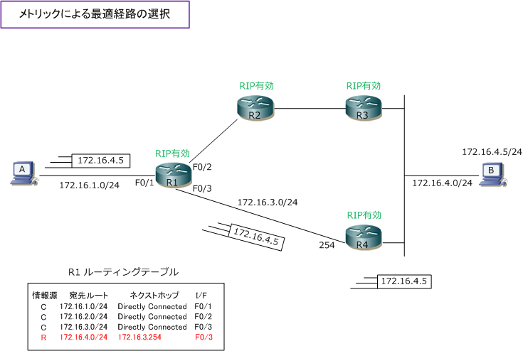
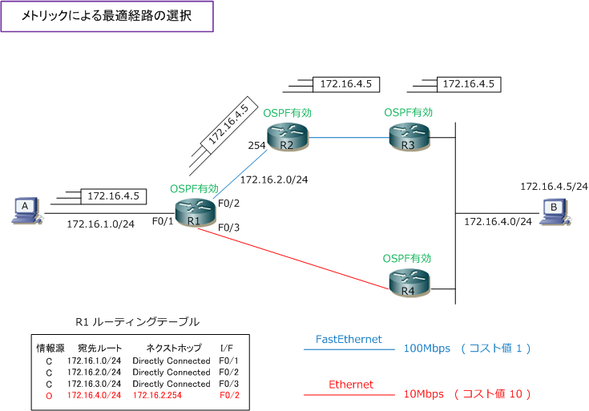

Routing - Metric
メトリックとは
複数のルーティングプロトコルが動作していて、複数の情報源により得られた宛先ルートが複数ある場合は AD（administrative distance）値に従い、1つの最適な宛先ルートがルーティングテーブルに登録されます。 そして、ある1つのルーティングプロトコルで得られた宛先ルートが複数ある場合、メトリックの値が小さい 経路が最適な宛先ルートとしてルーティングテーブルに登録されます。このメトリックを以下で説明します。
下図では「172.16.1.0/24」から「172.16.4.0/24」という宛先ネットワークへは、2つの通り道があります。 1つは「R1 ⇒ R2 ⇒ R3」という経路、もう1つは「R1 ⇒ R4」という経路。下図の各ルータにてRIPが有効な 場合、RIPではメトリック値にホップ数（ルータから宛先ルートまでに経由するルータの数）を使用すること になりますのでホップ数が少ない（メトリック値が小さい）R1 ⇒ R4の経路で通信を行います。R1⇒R2⇒R3 の経路ではホップ数は「2」となります。一方、「R1⇒R4」の経路においては、ホップ数が「1」となります。 以上の内容から、RIPでは、ホップ数の少ない経路である「R1 ⇒ R4」のパスにて通信を行うことになります。

ルーティングプロトコルによりこのメトリックの値は異なります。RIPではホップをメトリックの値にしますが OSPFの場合はコスト（インターフェースの帯域幅）をメトリックの値に使用します。従って、例えば下図では OSPFをルーティングプロトコルに使用している場合、「172.16.4.0/24」へR1⇒R2⇒R3の経路で通信します。
OSPFでは10Mbpsのリンクはコスト値が 10 となります。そして100Mbpsのリンクはコスト値が1となります。 下図のR1⇒R2⇒R3では、100Mbpsのリンクを2回経由することになるので「1+1」でコスト値は2となります。 R1⇒R4では10Mbpsのリンクを経由するのでコスト値は10。2 と 10 とでは 2 の方がメトリック値が低いです。

メトリック値の定義と基準はルーティングプロトコルにより異なりますが、小さい値が優先されるのは絶対。
| ルーティングプロトコル | メトリック | 説明 |
|---|---|---|
| RIP | ホップ数 | ルータから宛先ルートまでに経由するルータの数 |
| EIGRP | 複合メトリック | インターフェースの帯域幅、遅延、信頼性、負荷、MTU |
| OSPF | コスト | インターフェースの帯域幅 |
| IS-IS | ナローメトリック ワイドメトリック |
ナローメトリック ： I/F上のメトリック（1 ～ 63） ワイドメトリック ： I/F上のメトリック（1 ～ 16777214） |
Ciscoルータのルーティングテーブルでのメトリック値の確認方法はルーティングテーブルの見方でご確認を。
繰り返しになりますが、ルーティングテーブルでは 先ず、ロンゲストマッチに従い宛先ルートへのパス が決定します。ルーティングにおける大原則です。
次に、ルータ上で複数のルーティングプロトコルが 動作していて、複数の情報源により宛先ルートを 得る場合、AD値の最も低いルーティングプロトコル のルート情報をルーティングテーブルに登録します。
最後に、ある1つのルーティングプロトコルにおいて 得られた宛先ルートが複数ある場合、メトリック値の 最も小さいパスのルート情報をルーティングテーブル に登録します。メトリック値が全く同じである場合は 複数のルートがルーティングテーブルに存在して、 パケットのロードバランスして送出されていきます。